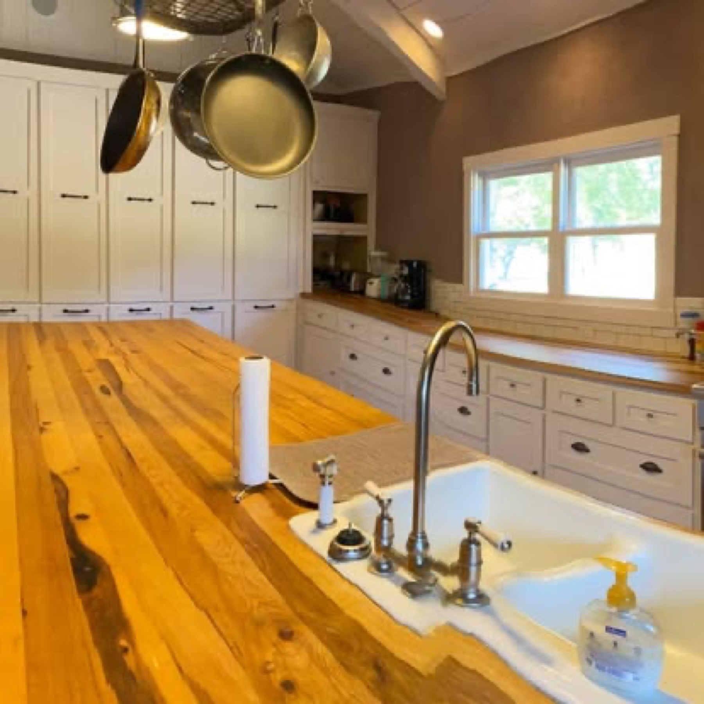
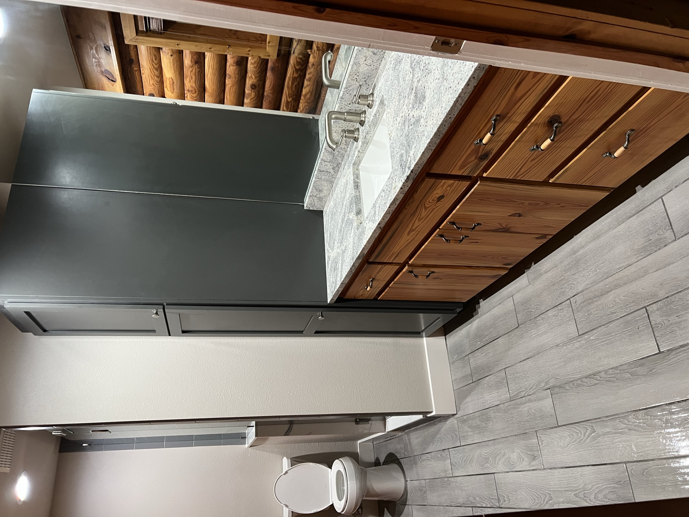
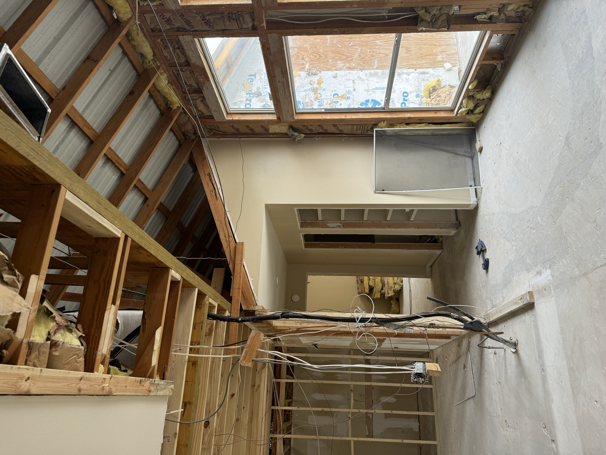
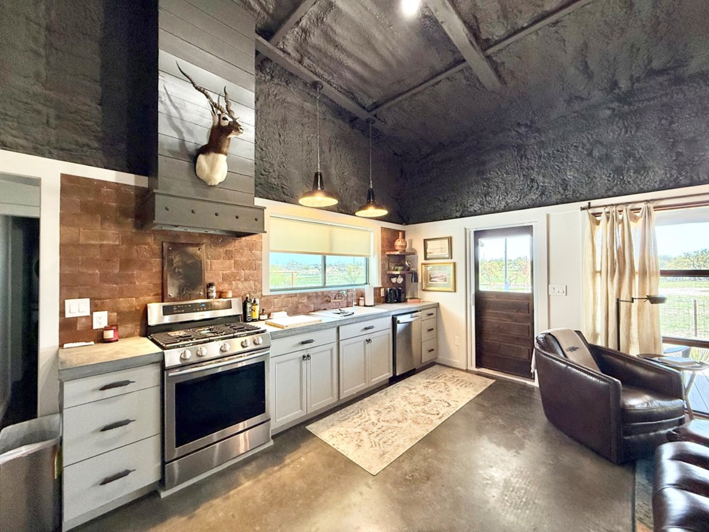
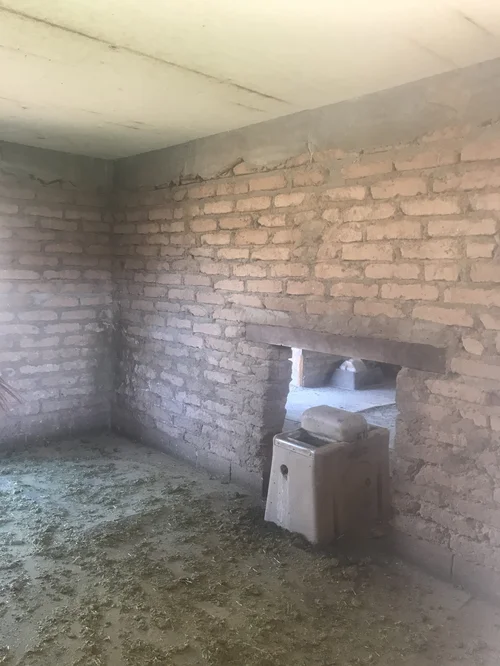

Our Expertise
What We Build
From custom homes to complete land development, every project gets the same uncompromising attention.

Premium New Construction
Custom Homes
Every home Randy builds starts with you. Your vision, your land, your lifestyle. We do not build from catalogs or repeat the same floor plan twice. Each project is a one-of-one crafted to fit the person who will live in it.
From architectural coordination to final finish-out, Randy is personally involved at every stage. That is not a tagline. It is how he has operated for 35 years.
- Complete design-build coordination
- High-end finishes and custom materials
- Projects starting at $200K+
- Hill Country and surrounding areas

Signature Upgrades
Renovations & Remodels
Not every great home starts from scratch. Sometimes the bones are already there and what you need is someone who can see the potential. Randy brings the same precision to remodels that he brings to new builds.
Whether it is a kitchen that needs to match the way you actually cook, a master suite that finally feels right, or a whole-house transformation, the result should feel like it was always meant to be that way.
- Full interior and exterior remodels
- Additions and expansions
- Period-sensitive restoration work
- Kitchen, bath, and living space redesigns

Where Others Won't Go
Ranch & Rural Construction
Building in the Hill Country is not the same as building in town. Remote access, unpredictable terrain, limited utilities, wildlife considerations, and county permitting all add layers that most builders are not equipped to handle.
Randy thrives on it. Decades of building on ranches and rural acreage means he has seen every challenge and knows how to solve it before it becomes a problem. If your property has a gate and a caliche road, you are talking to the right builder.
- Remote and difficult-access construction
- Integration with native landscape and skylines
- Ranch infrastructure coordination
- Work with unique and regional materials

From Raw Land to Front Door
Land Development Advisory
You bought the land. Now what? If you are a first-time rural buyer, the distance between owning acreage and living on it can feel overwhelming. Most builders want to show up when the pad is ready. Randy starts where you are.
He walks the property with you and maps out what needs to happen first: road access, well or water system, electrical service, septic design, drainage, and site prep. Then he builds the plan that gets you from raw dirt to a finished home.
This is the service most builders will not offer because it requires deep knowledge of rural infrastructure and the patience to guide someone through it. Randy has been doing exactly this for over three decades.
- Full property assessment and site planning
- Road construction and access solutions
- Well, water, and septic system coordination
- Electrical and utility service planning
- Drainage, grading, and land prep
- Ongoing advisory through the entire build

New Life, Same Character
Structure Conversions
That barn, that outbuilding, that old ranch structure with the good bones and the perfect view. It does not have to come down. It can become something extraordinary while keeping the character that made you want to save it in the first place.
Randy specializes in converting existing rural structures into modern living spaces. The before-and-after on these projects is what stops people mid-scroll. The process is what earns their trust.
- Barn and outbuilding conversions
- Ranch structure modernization
- Preservation of original character and materials
- Full interior build-out with modern systems
Not Sure Where to Start?
That is exactly why we offer a no-cost consultation. Tell us about your land, your property, or your vision, and Randy will help you figure out the right next step.
Schedule Your Free Consultation